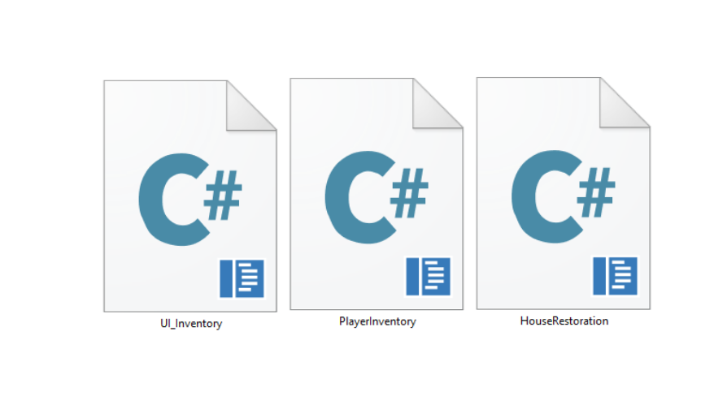

KATANA NO NEKO
Overview
Resource management and restoration with a combat component and three different biomes to explore. Gather resources, face enemies, and defeat bosses that block progress.
My Contribution
Artistic Vision & Core Objective
I was responsible for the entire artistic pipeline, from initial concept art and visual design to the production of all in-game assets and sprite animations. Our goal was to create an engaging experience featuring a charming art style and a recognizable, memorable protagonist.
The game is set in a village in ruins, and the art aims to implement contrast and distinction while remaining visually cohesive. Across different biomes and states of decay, every element feels like part of the same world. I designed the environment specifically to inspire a "restoration drive" in the player—creating a world they genuinely want to see beautiful, repaired, and full of life once again.

The Village: Old vs. New
The village serves as the central hub where the contrast between ruin and restoration is most evident. I designed and produced key environmental assets to support a progression system where locations transition from abandoned and damaged to fully restored.
The "Old" State: Uses muted tones, cracked textures, and overgrowth to convey a sense of history and neglect.
The "New" State: Features vibrant colors, clean architectural lines, and atmospheric details like lanterns and flowing water to reward the player's progress.

Combat: Player & Enemies
I focused on creating a protagonist that feels agile.
Protagonist: 4-way movement and multi-frame attack sequences. Custom particle systems that provide visceral feedback during encounters. Unique silhouette and distinct color palette, ensuring high legibility.
The Bestiary
Diverse range of enemies, each with "telegraphed" animations to ensure combat feels fair and rewarding

Biomes & Asset Architecture
I produced a wide array of biome-specific assets to ensure each of the three regions had a distinct visual identity and atmosphere.
Landmarks & Navigation: Distinct "landmarks"—such as the great spirit tree—to serve as focal points. Each biome uses a specific color signature, making it intuitive for the player to know exactly where they are.
Technical Design: Modular tilesets and layered backgrounds to allow for efficient level building.

NPCs: Animation & Purpose
All sprite animations for the NPCs were created to focus on fluid movement and emotional connection.
Interaction Design: "Talking" headshot sprites and specific animations, such as characters burrowing or waving, to give the inhabitants a sense of life.
Narrative Role: These characters serve as the heart of the village, providing a tangible reason for the player to continue their restoration efforts.

Technical Contributions & Programming
Restoration System: I programmed the logic that handles the structural transitions.
Inventory System: I developed the underlying architecture for resource management.
Particle Systems: I implemented custom 2D particle effects to enhance the feel of combat impacts and the visual "sparkle" when a structure is successfully restored.
